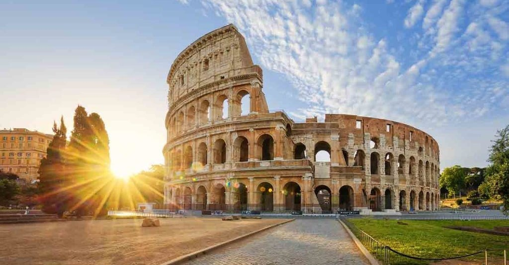
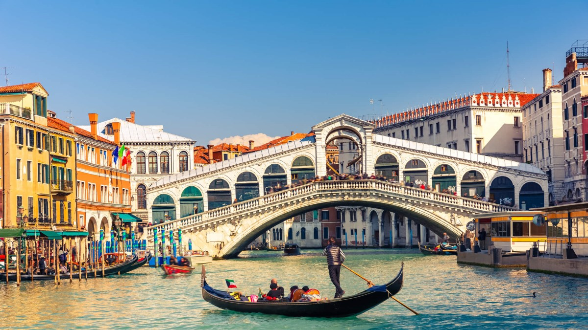
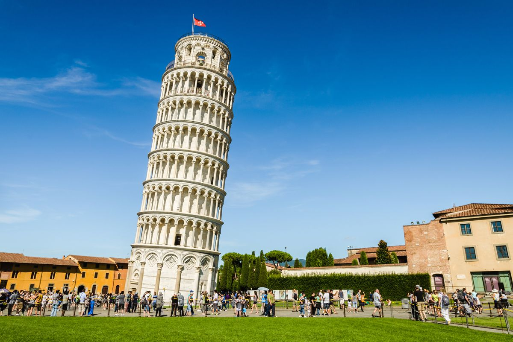

Italia, resminya Republik Italia, adalah sebuah negara kesatuan republik parlementer di Eropa Terletak di jantung Laut Mediterania. Italia berbatasan dengan Prancis, Swiss, Austria, Slovenia, San Marino dan Vatikan. Italia mencakup area seluas 301.338 km², dan dipengaruhi oleh iklim sedang dan iklim mediterania
Koloseum (Colosseo)

Koloseum (Colosseo), juga dikenal sebagai Flavian Amphitheatre, adalah amfiteater Romawi kuno yang terletak di tengah kota Roma, Italia.
Berikut adalah sejarah singkat Koloseum:
Pembangunan : Pembangunan Koloseum dimulai pada tahun 70-72 Masehi di bawah pemerintahan Kaisar Vespasian dan selesai pada tahun 80 Masehi oleh putranya, Kaisar Titus. Ini adalah bagian dari proyek pembangunan yang lebih besar untuk menghormati kemenangan Romawi dalam Perang Yahudi Pertama.
Desain dan Kapasitas : Koloseum adalah amfiteater terbesar yang pernah ada dalam sejarah Romawi. Dengan kapasitas sekitar 50.000 hingga 80.000 penonton, itu digunakan untuk berbagai pertunjukan, termasuk gladiator, pertarungan hewan, drama, dan acara-acara olahraga.
Arsitektur : Koloseum memiliki arsitektur yang mengesankan dengan tiga tingkat kursi yang dipisahkan oleh tiang dan busur, serta tiang-tiang kuat yang mendukung struktur atap. Bangunan ini dibuat dari beton, batu bata, dan marmer.
Penggunaan Selama Abad : Selama berabad-abad, Koloseum digunakan untuk berbagai pertunjukan hiburan dan olahraga. Namun, pada abad pertengahan, penggunaannya berkurang dan bangunan ini mengalami kerusakan karena gempa bumi dan perampokan batu marmernya.
Restorasi dan Pemeliharaan : Pada abad ke-18, Paus Benediktus XIV memulai upaya pemugaran Koloseum, yang kemudian dilanjutkan oleh pemerintah Italia. Hari ini, Koloseum telah dipugar dan merupakan salah satu situs bersejarah yang paling terkenal di dunia.
Warisan Budaya: Koloseum adalah salah satu ikon arsitektur Romawi dan merupakan warisan budaya yang penting. Itu juga telah diakui sebagai Situs Warisan Dunia UNESCO.
Koloseum tetap menjadi salah satu situs bersejarah yang paling terkenal di dunia dan salah satu simbol penting dari Roma kuno. Itu tidak hanya merupakan contoh penting dari arsitektur Romawi, tetapi juga tempat penting dalam sejarah olahraga, hiburan, dan budaya.
Venice

Venice adalah kota yang unik dan menakjubkan yang terletak di timur laut Italia, di laguna Venesia.
Berikut adalah sejarah singkat Venice dan kanalnya:
Pasal Mula : Venice (Venise atau Venezia dalam bahasa Italia) didirikan pada abad ke-5 Masehi oleh orang-orang yang melarikan diri dari serangan Barbarian di daratan Italia. Mereka memilih pulau-pulau di laguna Venesia sebagai tempat perlindungan.
Arsitektur dan Kanal : Salah satu ciri khas Venice adalah jaringan kanal yang rumit. Kanal ini digunakan sebagai jalur transportasi utama dalam kota dan sebagai tempat untuk mengatasi banjir yang sering terjadi di kawasan ini.
Seni dan Kebudayaan : Venice juga terkenal sebagai pusat seni dan kebudayaan. Selama Renaisans, kota ini menjadi tempat kelahiran seniman terkenal seperti Titian, Tintoretto, dan Marco Polo.
Kekayaan dan Kemegahan : Venice dikenal karena kemegahan arsitekturnya, dengan bangunan-bangunan bersejarah yang indah seperti Basilika Santo Markus, Istana Doge, dan Campanile (Menara Lonceng). Grand Canal, yang berliku-liku melalui kota ini, dihiasi dengan istana-istana megah.
Kemunduran : Pada abad ke-18, kejatuhan Venice mulai terlihat dengan penurunan pengaruh maritimnya dan perubahan dalam rute perdagangan dunia. Pada tahun 1797, kota ini jatuh ke tangan Napoleon Bonaparte dan kemudian kepada Kekaisaran Austria.
Pariwisata : Hari ini, Venice adalah salah satu tujuan wisata paling populer di dunia. Jutaan wisatawan datang setiap tahun untuk mengagumi arsitektur yang luar biasa, menikmati gondola di kanal-kanalnya, dan mengalami pesona kota ini.
UNESCO World Heritage Site : Venice dan laguna Venesia diakui sebagai Situs Warisan Dunia UNESCO pada tahun 1987.
Meskipun Venice mengalami berbagai tantangan selama sejarahnya, kota ini tetap menjadi salah satu tempat paling romantis dan bersejarah di dunia. Kanal-kanalnya, arsitektur megahnya, dan pesona khasnya membuatnya menjadi tujuan wisata yang tak terlupakan.
Pisa

Pisa adalah sebuah kota yang terletak di region Toscana, Italia, dan terkenal karena Menara Pisa yang miring yang menjadi ikonik.
Berikut adalah sejarah singkat Kota Bersejarah Pisa:
Asal Mula : Pisa memiliki sejarah yang panjang yang dapat ditelusuri kembali ke masa Romawi. Kota ini didirikan oleh orang Etruria, yang kemudian dikuasai oleh Romawi.
Pusat Maritim : Pada Abad Pertengahan, Pisa menjadi salah satu kota paling kuat dan makmur di Italia karena posisinya yang strategis di pesisir Laut Tengah. Kota ini adalah pusat perdagangan dan maritim yang penting dan memiliki armada laut yang kuat.
Pembangunan Menara Pisa : Pada abad ke-12, pembangunan Katedral Pisa dimulai, dan ini juga mencakup pembangunan Menara Pisa yang ikonik. Namun, ketika konstruksi menara mencapai tingkat ketiga, tanah lunak di bawahnya mulai menyebabkan miringnya menara.
Kekuasaan Militer : Pisa terlibat dalam berbagai konflik militer dan perang, termasuk perang melawan Republik Genoa dan Konflik Pisa-Genoa. Kekuasaan Pisa terus berkurang seiring waktu.
Penaklukan oleh Florence : Pada abad ke-15, Pisa akhirnya ditaklukkan oleh Republik Florence, yang merupakan bagian dari wilayah Toscana.
Penaklukan oleh Napoleon : Pada abad ke-18, Pisa jatuh ke tangan Napoleon Bonaparte selama Perang Koalisi Ketiga. Setelah jatuhnya Napoleon, Pisa menjadi bagian dari Kerajaan Sardinia dan kemudian dari Kerajaan Italia yang bersatu.
Pariwisata dan Warisan Dunia : Pisa menjadi salah satu tujuan wisata yang populer pada abad ke-19 dan ke-20, terutama karena Menara Pisa yang miring. Hari ini, Pisa dan Situs Piazza del Duomo (Termasuk Menara Pisa) diakui sebagai Situs Warisan Dunia UNESCO.
Pisa adalah kota yang terkenal di seluruh dunia karena Menara Pisa yang unik, tetapi juga memiliki sejarah dan warisan budaya yang kaya yang mencakup berbagai bangunan bersejarah dan pengaruh budaya yang beragam.